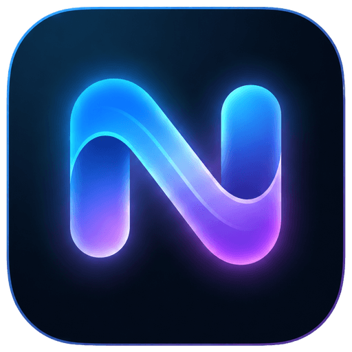

Bienvenue, puis accès
Une promesse produit statique et un seul CTA. Dès qu’on choisit connexion ou inscription, tout le marketing disparaît au profit d’un écran de compte dédié.
Ouvrir H en plein écran
Norva · exploration authAprès comparaison de Netflix, Disney+, Spotify, Uber, Airbnb, Headspace, Wise, Hulu, Prime Video, Revolut et Notion : aucun écran n’est copié. La nouvelle piste L réunit la clarté du parcours progressif, une illustration originale et un mouvement sobre.
Une vraie scène de marque, sans collage de posters ni carrousel. Le formulaire ne pose qu’une question à la fois et reste entièrement visible sur mobile.
Compare d’abord le parcours, pas seulement la surface. Chaque prototype est interactif : H sépare l’accueil de l’auth; I révèle une étape à la fois; J concentre les choix dans une feuille; K élimine le mot de passe.
Une promesse produit statique et un seul CTA. Dès qu’on choisit connexion ou inscription, tout le marketing disparaît au profit d’un écran de compte dédié.
Ouvrir H en plein écranUne seule question d’abord : l’e-mail. Norva détermine ensuite s’il faut connecter ou créer le compte, puis ne révèle que l’étape nécessaire.
Ouvrir I en plein écranLa scène Norva reste sobre; une feuille familière rassemble Google et e-mail, avec une reassurance explicite sur la séparation du mot de passe fournisseur TV.
Ouvrir J en plein écranL’e-mail déclenche un code court et le même point d’entrée sert aux nouveaux comptes comme aux retours. Très fluide, mais demande un vrai changement d’authentification.
Ouvrir K en plein écranLa personnalité Norva occupe la scène; l’authentification vit dans un vrai panneau latéral, sans carte flottante ni discours animé.
Ouvrir D en plein écranLogo, choix du compte et rien d’autre sur mobile. C’est la piste la plus rapide à comprendre, la plus robuste et la moins fatigante.
Ouvrir E en plein écranUn champ e-mail neutre, puis l’étape strictement nécessaire. Plus fluide, mais demande une adaptation réelle du parcours d’authentification.
Ouvrir G en plein écranLe formulaire précède une preuve produit statique.
Ouvrir AUne composition multi-écrans remplace le rail.
Ouvrir BTrois étapes concrètes expliquent le parcours.
Ouvrir CUn schéma fixe explique le lien entre les écrans.
Ouvrir F